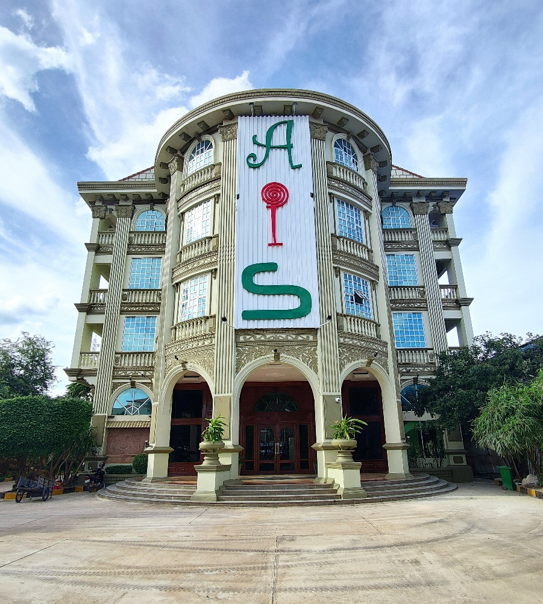

American Intercon School
American Intercon School (AIS; Khmer: សាលារៀនអន្តរទ្វីបអាមេរិកាំង) is a private general education school accredited by the Ministry of ,
and Sports with a Khmer-American curriculum from Preschool to Grade 12.[20] It operates in seven campuses in Phnom Penh, one
campus in Siem Reap and one campus in Takeo, Cambodia. American Intercon School is a subsidiary of Mengly J. Quach Education [21] and a
sister company Aii language center.[22] It was founded in Phnom Penh on October 10, 2005, by Mengly Jandy Quach.[23] American Intercon
School is divided into four sections: Preschool (Preschool and Kindergarten), Elementary (from Grade 1 to Grade 6), Junior High School
(Grade 7 to Grade 9) and High School(Grade 10 to 12).